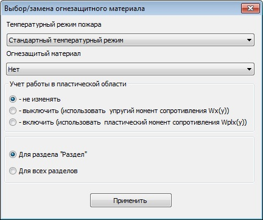

ќкно
выбрать заменить огнезащитный материал

ќкно
предназначено дл€ замены
огнезащитного материала и перерасчета
конструкций в выбранном разделе или
всех разделах.
—одержит
список подключенных огнезащитных материалов и
переключатель дл€ выбора услови€
расчета.
≈сли
дл€ конструкции проведен расчет, при
замене материала перерасчет будет
выполнен автоматически.